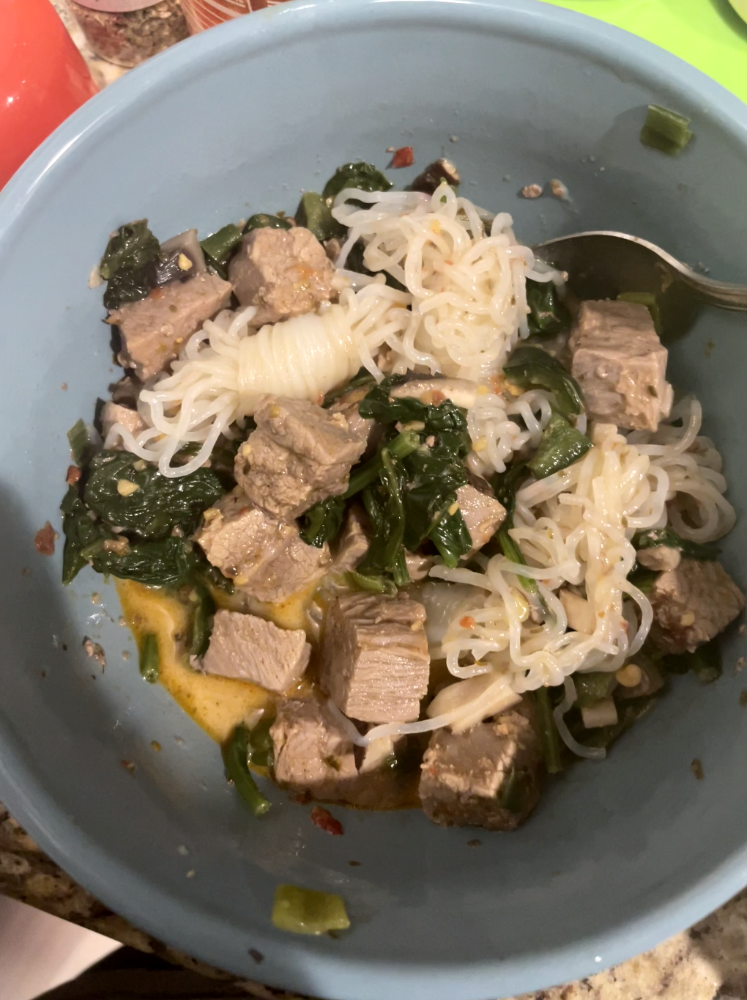
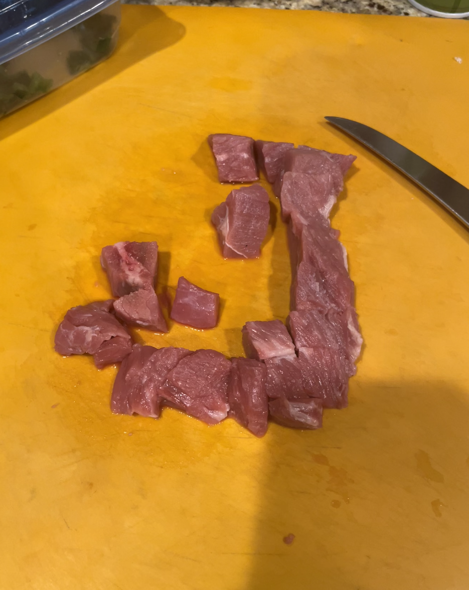
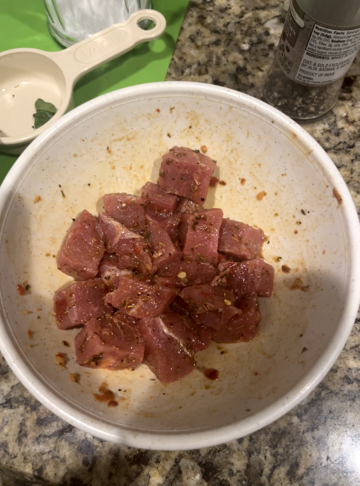
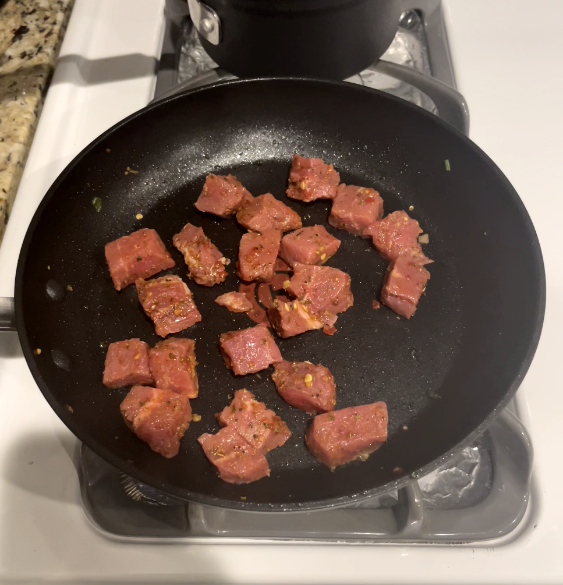
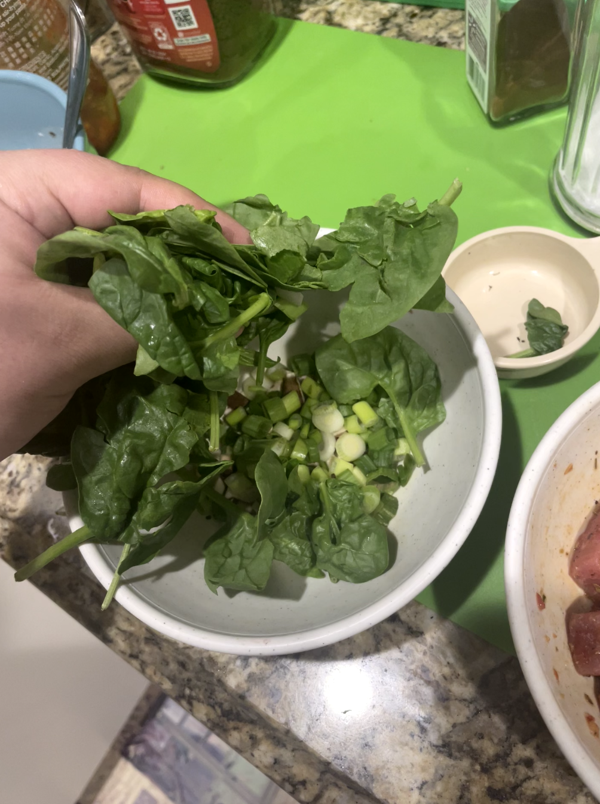
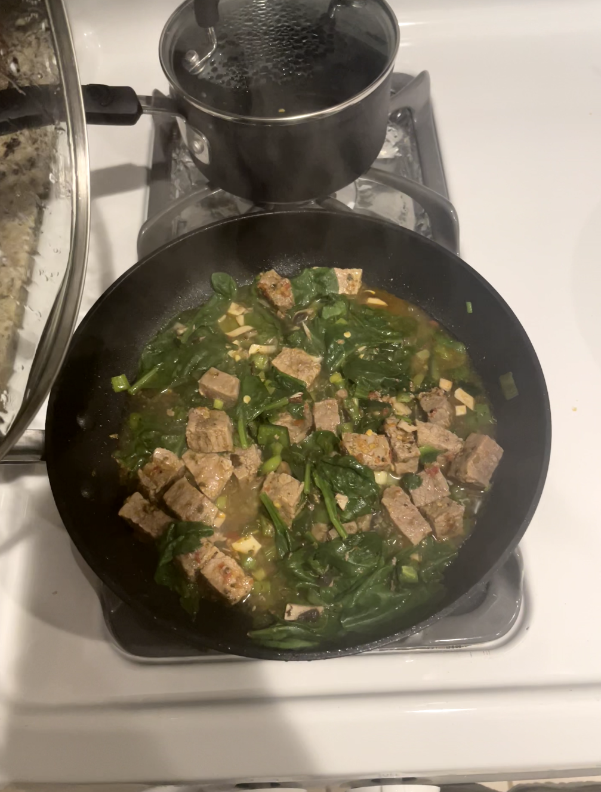
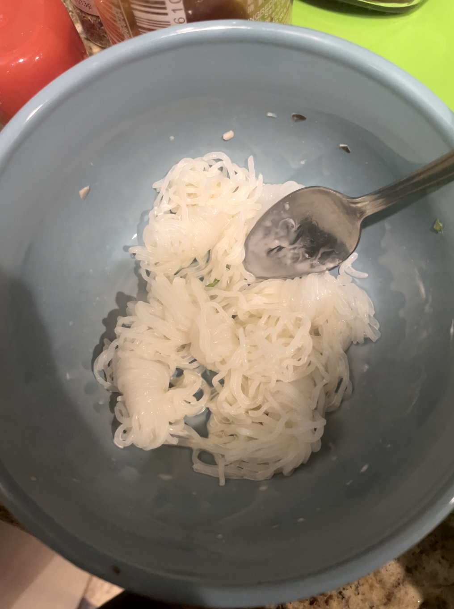
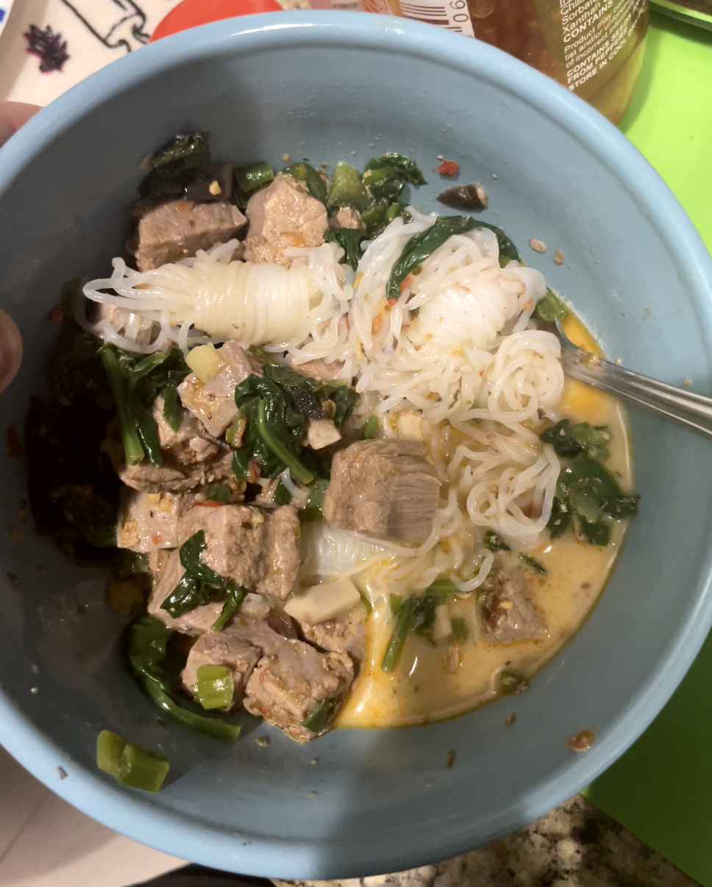

the-edward-cruz-original

Whats In It?
The Edward Cruz Original, named after myself because why not, came
from me expiermenting with what I could make while on the Ideal Protien
Diet Protocol. This diet only lets me eat certain foods and use certain
seasonings with my meals and at the time my meat intake was limited to
4-6 oz. This recipe I've concocted is in my opinion
restuarant grade food when ever you can only eat meat for dinner and
vegteables mainly through out the day.
The Noodles you can see in the pictures are noodle knots but not your
typical type of noodle. The noodles in this dish are made of Konjac,
jelly like substance when seen in solid chunks but you can get them
at stores in the forms of rice or noodles. Konjac is mainly made out
of water and the rest is fiber, the calorie count for an entire
pack is around 10 cals. The fiber the noodle is made out of also
helps with lowering the horomone in the body that results in you
feeling hungry which is why it has a super filling effect after eating.
ingredients
- 200g of Flank Steak
- 1/4 cup of Poblano Peppers
- 1/4 cup of Portobello Mushrooms
- 1/4 cup of Green Onions
- 1 & 1/4 cups of Spinach
- 1 Packet of Konjac Noodles/Noodle Knots
- 1 tsp of Kewpie Mayonnaise
- 1 tsp of Olive Oil
- (Optional) 1 tbsp of Chili Garlic Sauce
seasonings
- Salt
- Ground Ginger
- Black Pepper
- Oregano
- Minced Garlic
Steps
- Start by chopping the Flank Steak into cube like shapes.

- After the meat is chopped go ahead and season it with
what you chose from the list and throw in the olive oil
and Chili garlic sauce (if applicable) at this stage as well.

- Once seasonings are added and well mixed onto the meat go ahead
and throw them into the pan at mid heat

- While the meat starts to cook, go ahead and start prepping the vegteables
if you didnt already.

-
Once the meat looks cooked on both sides go ahead and throw in the veggies
to cook with the meat and they'll absorb all the meat juices too.

-
While you wait for everything to finish cooking in the pan, you
should prep the bowl with the noodles/noodle knots with the
Kewpie mayo.

-
Once everything looks cooked go ahead put everything from
the pan into the bowl you prepared.

- And you are done!
Back Home